У меня было
предложение.
Оно собиралось
без меня.
Слова знакомые, смысл угадывается, а глагол стоит не там. Кажется, что немцы ставят слова как попало. Немцы ставят слова строже всех. Сейчас покажу схему: три позиции — и всё встаёт на места.
Экзамен, которого я не сдал
У меня был экзамен.
На экзамене было задание.
Задание было: расскажи о своём дне.
Я рассказал.
Экзаменатор слушал и делал лицо.
Лицо было вежливое.
Говорю, всё?
Он говорит, всё.
Говорю, а что не так.
Он говорит, слова правильные.
Говорю, а предложения.
Он говорит, предложений не было.
Я говорил русскими предложениями, в которые подставил немецкие слова.
Это, как выяснилось, два разных языка.
Почему мозг сопротивляется
В русском смысл несут окончания. «Машу любит Петя» и «Петя любит Машу» — разберёшься по падежам, порядок свободен. В немецком смысл несёт место. Переставляя слова, ты не меняешь интонацию — ты меняешь несущую конструкцию. Отсюда ощущение, что язык «перевёрнутый»: он не перевёрнутый, он позиционный.
Почему это тяжело физически
Немецкий заставляет держать половину глагола в памяти до конца фразы. Русскому уху непривычно: у нас смысл собирается по ходу, у них — в последний момент. Это не про ум, это про тренировку рабочей памяти. Она тренируется.
Что делать вместо зубрёжки примеров
Примеры забываются, схема остаётся. Дальше — четыре позиции и пять правил. Всё, что ты будешь делать до C1, это варианты одной и той же рамки.
Глагол стоит вторым.
Не вторым словом — вторым элементом
Первую позицию может занять что угодно: подлежащее, время, место, целый оборот. Глагол это не сдвигает. Он прибит гвоздями ко второй позиции, а подлежащее просто отходит вправо.
Нажми — переставлю начало, глагол останется на месте
Самая частая ошибка на свете: вынесли время вперёд и оставили подлежащее на месте. Позиций стало три вместо двух. Немец такое слышит сразу — как русский слышит «я вчера в кино ходить».
Глагол умеет
разрываться пополам
Как только появляется второй глагольный кусок — Perfekt, модальный, отделяемая приставка, будущее — предложение берётся в скобку. Изменяемая часть остаётся на позиции II. Неизменяемая уезжает в самый конец. Между ними — Mittelfeld, куда складывается всё остальное.
Переключи тип — посмотри, что уезжает в конец
| тип | позиция II | конец предложения |
|---|---|---|
| Perfekt | habe / bin | Partizip II — gesehen, gefahren |
| Модальный глагол | will / muss / kann | инфинитив — fahren, arbeiten |
| Отделяемая приставка | stehe | приставка — auf |
| Futur I | werde | инфинитив — anrufen |
| Пассив | wird | Partizip II — repariert |
Пять разных тем из учебника — одна конструкция. Если ты видишь рамку, ты уже знаешь, где искать смысл: в конце.
Вопрос — это то же самое,
только глагол шагнул влево
Нажми на тип — соберу предложение заново
Без вопросительного слова
Глагол выходит на первое место, подлежащее сразу за ним. Kommst du morgen? Ответ ждут да/нет.
С вопросительным словом
W-слово занимает первую позицию, и правило «глагол вторым» снова работает. Wann kommst du? Никакого исключения нет.
Отсюда простой вывод: вопросы — не отдельная тема. Это та же линейка, просто первая клетка либо пустая, либо занята вопросительным словом.
Что происходит
внутри рамки
Mittelfeld — единственное место, где есть свобода. Но и она с порядком: обстоятельства идут по схеме TeKaMoLo.
Собери середину сам — нажимай по порядку
Порядок: время → причина → образ действия → место.
И одно правило про дополнения
Два существительных: сначала Dativ, потом Akkusativ. Ich gebe dem Kind das Buch.
Появилось местоимение — оно лезет вперёд. Ich gebe es dem Kind.
Логика простая: короткое и известное — раньше, длинное и новое — позже. Немецкий вообще любит ставить главную новость под конец.
nicht ничего не ломает.
Оно выбирает, что отрицать
Правило одно: nicht стоит перед тем, что ты отрицаешь. Отрицаешь всё предложение — уходит в конец, но перед второй частью глагола, приставкой, местом назначения и прилагательным-сказуемым.
Поставь nicht в разные места — смысл поедет за ним
Нажми на пустую клетку между словами.
| предложение | что отрицается |
|---|---|
| Ich kenne ihn nicht. | всё целиком — я его не знаю |
| Ich habe ihn nicht gesehen. | всё, но перед Partizip II |
| Ich fahre nicht nach Berlin. | всё, но перед указанием направления |
| Das ist nicht teuer. | всё, но перед прилагательным |
| Ich habe kein Auto. | существительное с ein или без артикля — тут kein, не nicht |
Придаточное —
это когда глагол уходит в конец
После weil, dass, wenn, ob, obwohl, da и любого вопросительного слова личная форма глагола едет в самый конец. Не «так принято» — так немецкий отделяет главное от зависимого.
Переключай союз — глагол перелетит сам
Союзы, которые ничего не трогают
und · aber · denn · oder · sondern
Они стоят «на нулевой позиции» и на порядок не влияют. После них предложение как обычно: подлежащее, глагол вторым. Отсюда и разница: weil ich krank bin, но denn ich bin krank. Смысл один, конструкции разные.
Придаточное впереди — самое неприятное
Weil ich krank bin, bleibe ich zu Hause.
Всё придаточное занимает первую позицию целиком. Значит на второй сразу глагол главного — и два глагола встают через запятую вплотную. Выглядит дико, но именно так и правильно. Немцы этот стык слышат как норму.
Во второй паре обрати внимание: в конец уезжает модальный глагол, а инфинитив встаёт перед ним. Изменяемая форма всегда самая последняя.
Четыре ошибки,
по которым тебя узнают
Русский порядок поверх немецких слов
Heute ich gehe… Мозг переводит пословно и тащит русскую конструкцию. Лечится проверкой: посчитай элементы до глагола. Должен быть ровно один.
Забытый хвост
Ich habe gesehen einen Film. Рамка не закрылась. Partizip и инфинитив в немецком всегда терпят до конца — это единственное место, где они живут.
weil как denn
…, weil ich bin müde. Самая узнаваемая ошибка русскоязычных. Если сомневаешься — скажи denn: там порядок прямой, и ты ничего не нарушишь.
Свободный порядок «для интонации»
В русском перестановка добавляет оттенок. В немецком она либо меняет акцент по строгим правилам, либо просто ломает фразу. Свободы тут меньше, чем кажется, и это хорошая новость: меньше вариантов — меньше решений.
Собери сам.
Три предложения
Нажимай слова в правильном порядке. Ошибёшься — карточка вернётся, ничего не сломается.
Шесть вопросов.
Больше не нужно
Первую позицию занял morgen — значит подлежащее уходит за глагол. Глагол железно вторым.
Рамка: habe на позиции II, Partizip II закрывает предложение. Дополнение живёт внутри.
W-слово на первой позиции, глагол на второй, отделяемая приставка auf — в конец. Два правила сразу.
Время (heute) → образ действия (mit dem Bus) → место (ins Büro). Причины тут нет, схема просто сжимается.
Общее отрицание уходит в конец. «Nicht ich» — это уже «не я, а кто-то другой»: отрицание переехало на подлежащее.
В придаточном изменяемая форма — самая последняя. Инфинитив встаёт перед ней: arbeiten muss.
Вся конструкция
на одном экране
Позиция II
Глагол вторым элементом. Что угодно впереди — подлежащее отходит вправо.
Рамка
Вторая часть глагола — в конец. Perfekt, модальные, приставки, Futur, пассив.
Вопрос
Глагол на I. С W-словом — снова на II. Исключений нет.
TeKaMoLo
Когда → почему → как → куда. Dativ раньше Akkusativ, местоимения вперёд всех.
nicht
Перед тем, что отрицаешь. Общее отрицание — в конец, но перед хвостом.
Придаточное
Глагол в конец. Стоит впереди — занимает всю первую позицию.
Кстати. Это шесть правил. На интеграционных курсах их размазывают на полгода, между лексикой и диктантами, и никто ни разу не показывает их рядом — а рядом они складываются в одну картинку за один вечер.
Это был один урок. Их 340
Мы вели разговорные клубы для тех, кто уже живёт в Германии — больше ста человек. Готовили под них гайды с реальными фразами: врач, ресторан, Amt, работа, жильё. Потом сложили всё в одну платформу от A0 до C1, чтобы не пересобирать заново под каждого.
Платформа собрана
ровно под эти фразы
Четыре шага
внутри каждой темы
Человеческим языком. Как на этой странице.
Если текст не зашёл — послушай. Разные головы берут по-разному.
Пока не сделал руками — не выучил. Это не мнение, это как работает память.
Не «правильно/неправильно», а почему. Именно этого нет в учебнике дома.
Не описание,
а сама платформа
Записи экрана без монтажа и скриншоты из рабочей версии. Кликни по любому изображению, чтобы открыть крупно.
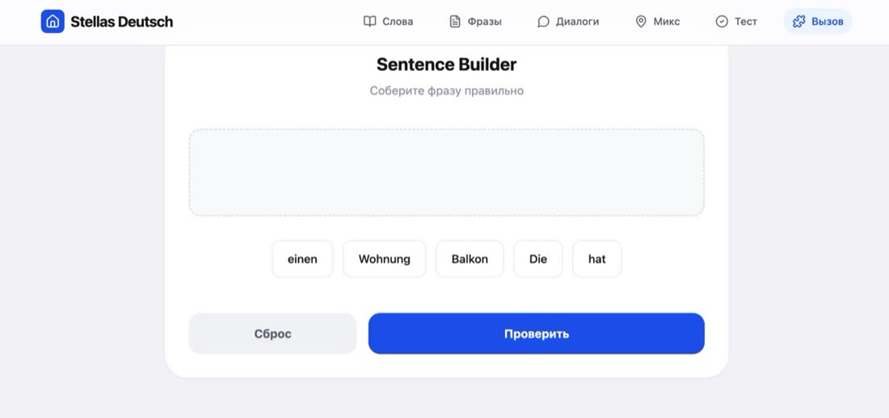
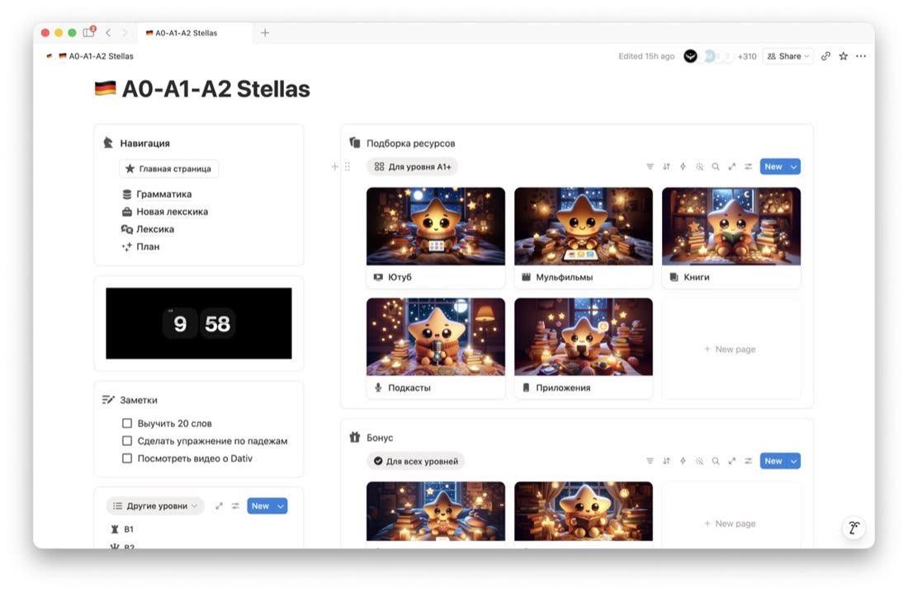
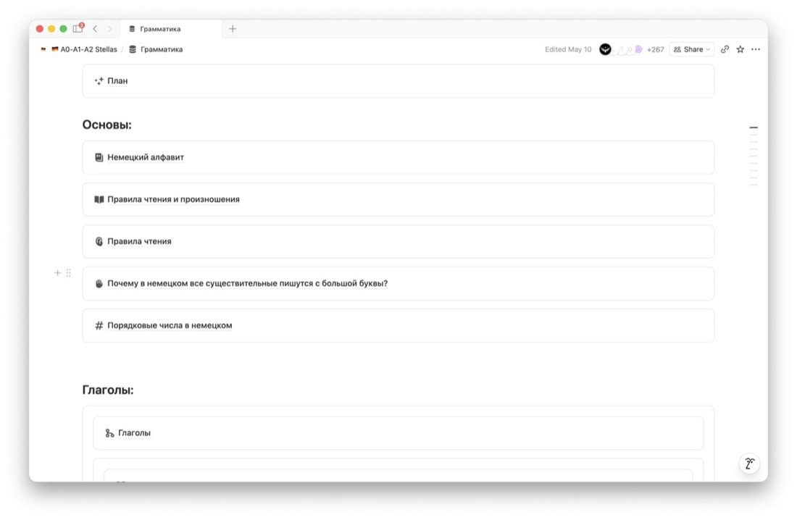
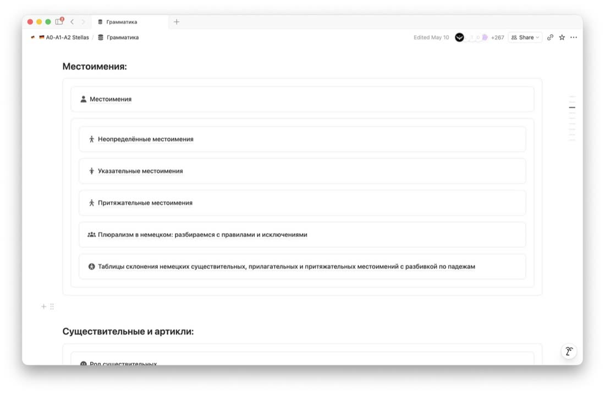
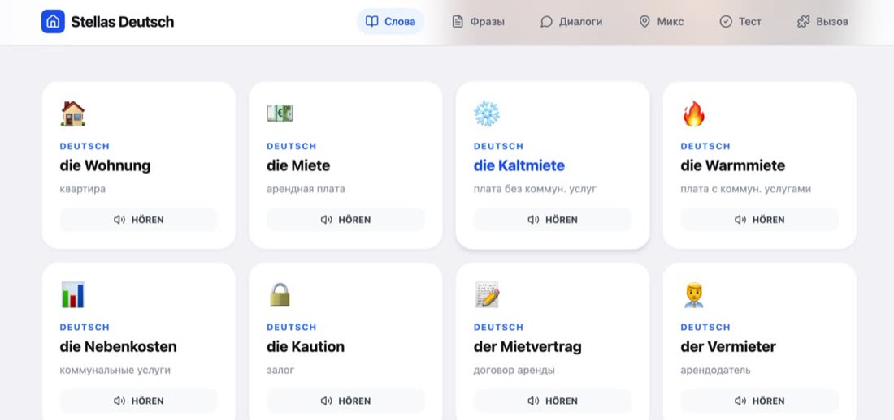
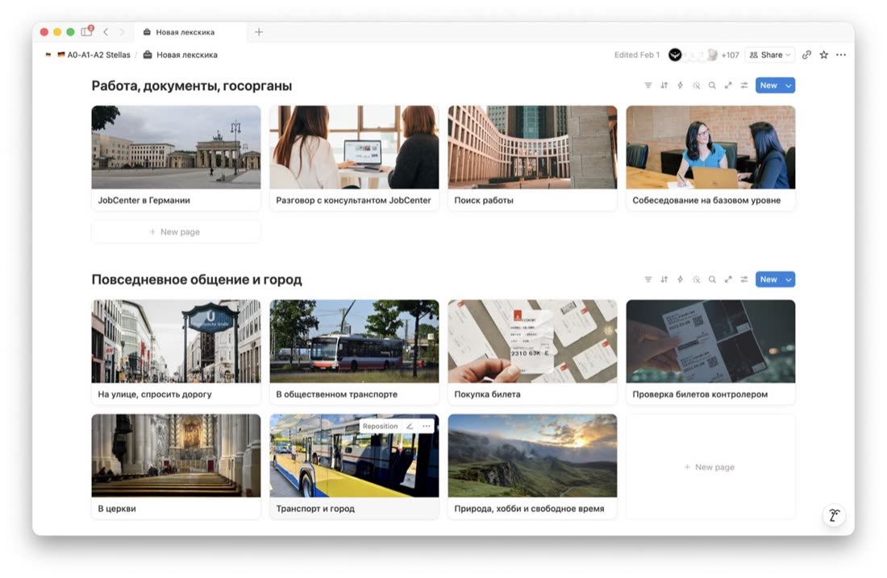
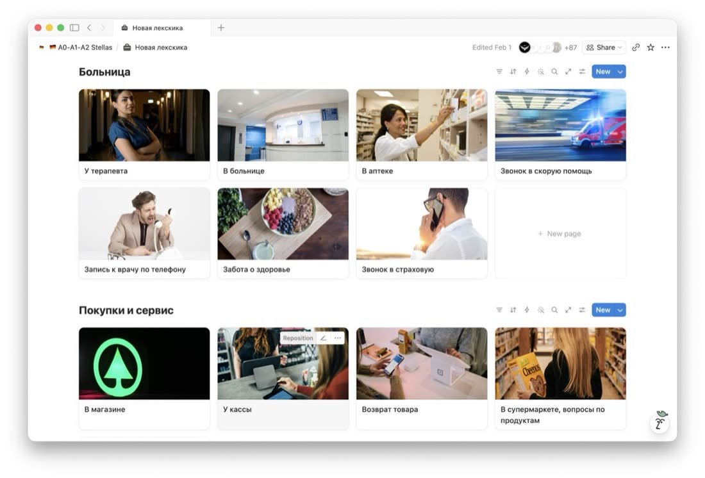
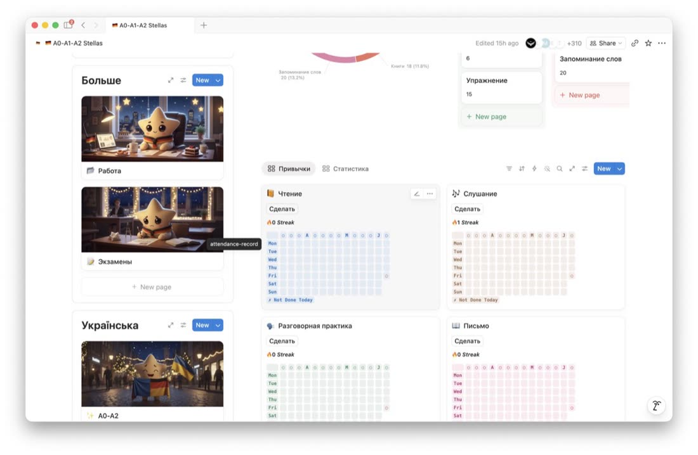
Скриншоты переписок.
Как есть
Не пересказ и не рекламные карточки, а сообщения от людей, купивших доступ. Имена и аватары убраны.
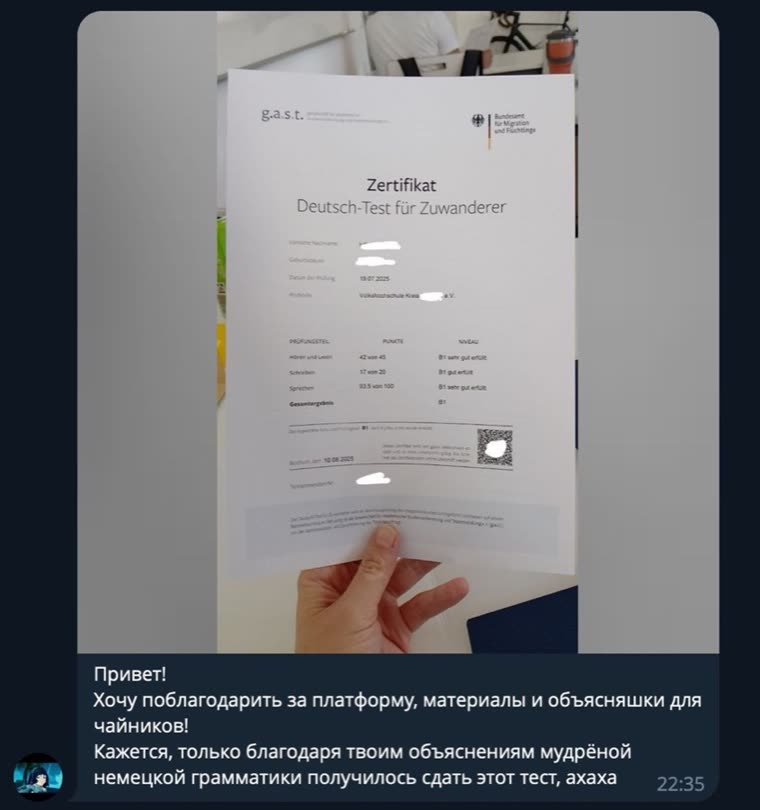
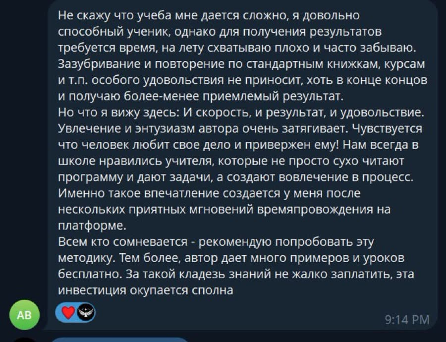
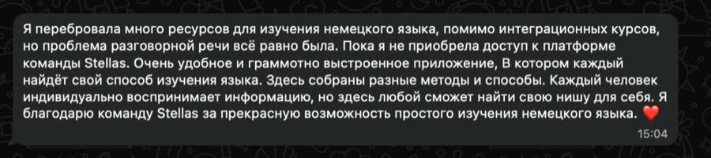
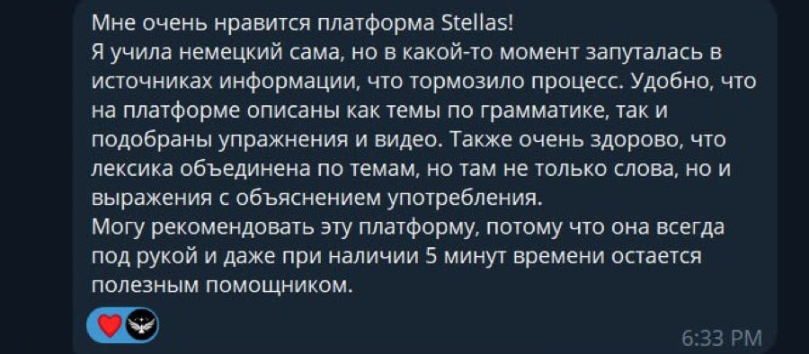
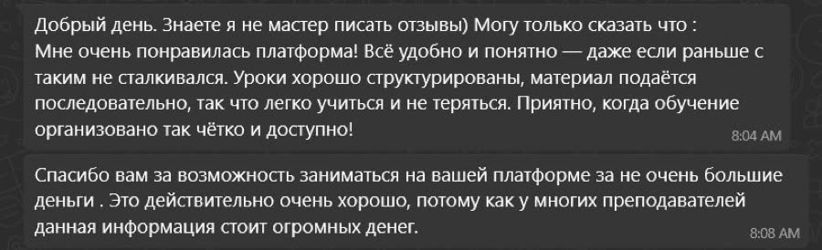
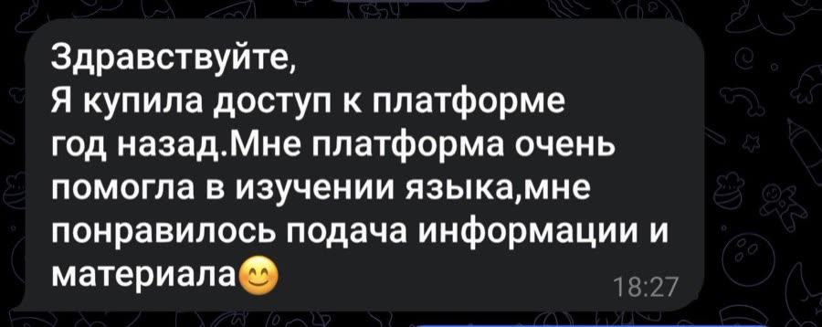
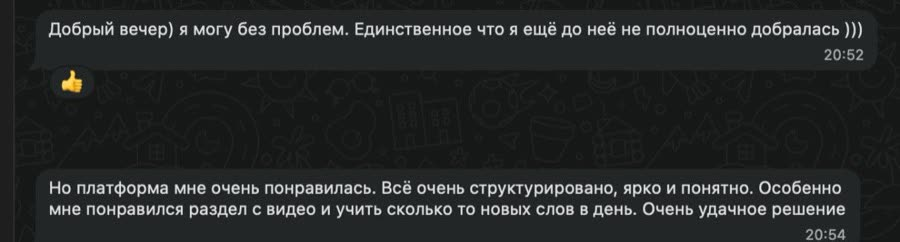
Один платёж.
Доступ навсегда
A0 → C1
Обе платформы вместе. Покупаешь один раз.
- 340+ гайдов по грамматике и лексике
- 7500+ слов с озвучкой и транскрипцией
- Фильмы, книги, подкасты по уровням
- Трекер, флеш-карты, экзамены, диалоги
- Платформа A0–A2 на украинском — в подарок
A0 → A2
Если только приехал и нужен фундамент: артикли, порядок слов, базовые ситуации.
Взять A0–A2B1 → C1
Если B1 уже сдан, а говорить всё равно страшно и грамматика плывёт.
Взять B1–C1Один час с репетитором в Германии стоит примерно как вся платформа целиком. Разница в том, что час заканчивается, а платформа — нет.
На то, что ты
сейчас думаешь
1Что понять в первую очередь про порядок слов?
Что считать надо не слова, а элементы. Глагол стоит вторым элементом — а первым может быть хоть одно слово, хоть целый оборот из шести. Если держать в голове только это, половина ошибок исчезает сразу.
2Почему предложения кажутся сложными, хотя слова знакомы?
Потому что ты читаешь их русской схемой. В русском смысл несут окончания, и порядок можно тасовать. В немецком смысл несёт позиция, а половина глагола вообще ждёт в конце. Мозгу приходится держать конструкцию открытой — непривычно, но тренируется за несколько недель.
3Есть ли разница между вопросом и утверждением?
Есть, ровно одна: в Ja/Nein-вопросе глагол выходит на первое место. С вопросительным словом всё возвращается к обычному — W-слово первое, глагол второй. Отдельной темы «вопросы» на самом деле не существует.
4Как не запутаться с отрицаниями?
Задай себе вопрос: что именно я отрицаю? nicht встаёт прямо перед этим. Если отрицаешь всё предложение — nicht едет в конец, но пропускает вперёд вторую часть глагола, приставку, направление и прилагательное-сказуемое. Для существительных с ein или без артикля используется kein.
5Когда следить за порядком особенно внимательно?
В придаточных и в предложениях, которые ты начинаешь не с подлежащего. Это два места, где русская привычка срабатывает автоматически и выдаёт тебя. В остальном можно расслабиться — тебя поймут даже с ошибкой.
6«Я уже пробовал курсы, было плохо»
На курсах проблема не в тебе, а в скорости: группа едет со своей, остановиться ради тебя не может. На платформе ты сам решаешь, сколько висеть на рамке — день или три недели. Доступ навсегда, ничего не сгорает, вернуться можно через год.
Порядок слов закрыт.
Дальше — падежи и времена
Устроены они так же: несколько правил, которые надо один раз увидеть рядом. Всё это уже разложено внутри — вместе со словами, фразами и упражнениями.